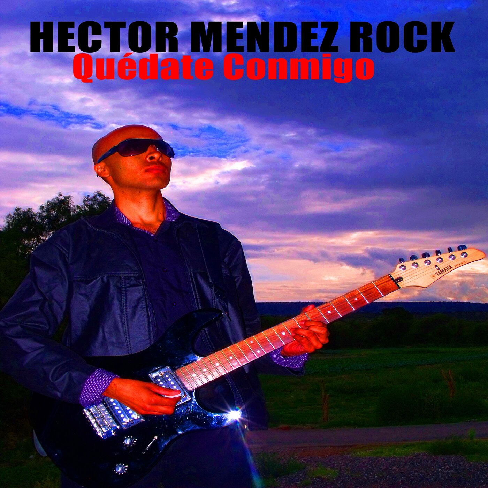
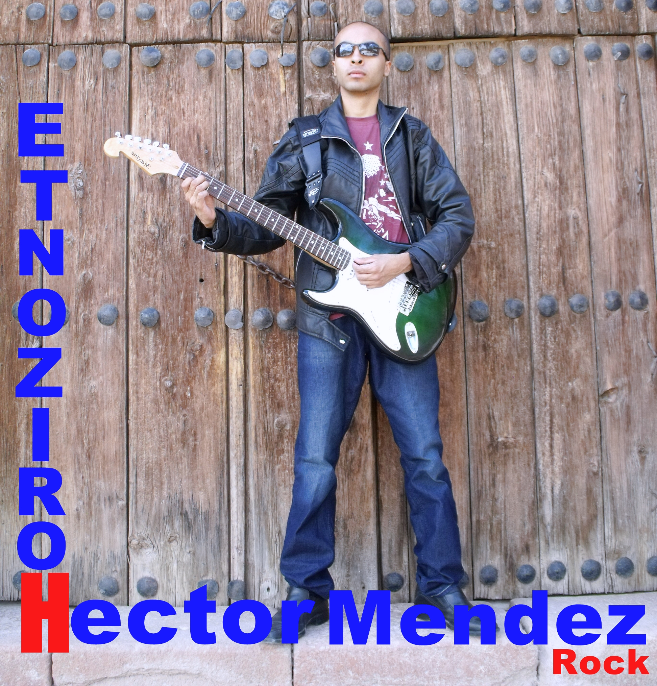

Discografía

Quédate Conmigo
Fecha de lanzamiento: 15 de junio de 2012
Primer álbum con canciones originales y algunas versiones de covers.
Temas
- Mi Corazón Herido
- Potosina (Cover)
- Cuando Te Conocí
- Quédate Conmigo (Cover)
- Brillante Noche
- Un Nuevo Camino
- Mutación
- Atrapado Estoy
- Esclavo y Amo (Cover)

El Solitario
Fecha de lanzamiento: 24 de abril de 2013
Álbum con canciones de rock y baladas que consolidan el estilo musical del proyecto.
Temas
- El Solitario
- Todo Está Allí
- Más Allá del Silencio
- Como Ayer
- Todo Se Transforma
- Solo Tú
- Notas de Amor
- Juntos Escaparemos
- Todo Un Sueño
- Fue Un Día Vacío
- No Te Vayas
- ¿Por Qué Fallé?
- No Me Esperabas
- Siete Letras

Horizonte
Fecha de lanzamiento: 6 de noviembre de 2013
Álbum con un sonido más orientado al rock, incluyendo guitarras eléctricas, bajo y batería. Representa una evolución musical dentro del proyecto.
Temas
- Llévame
- Más Allá del Silencio
- Como Ayer
- Solo Dame Un Momento
- Vuelve
- Solo Sé Que Te Amé
- Dieciocho de Mayo
- Soñemos Más
- Una Historia Más
- Otra Vez
Todo Es Real
Fecha de lanzamiento: 2 de agosto de 2023
Álbum con canciones originales que combinan rock, balada, guitarras eléctricas, guitarra electroacústica, teclado y batería.
Temas
- Te Extraño
- Una Respuesta
- La Campana
- Mala Actitud
- Estrella Eterna
- Solo Te Quiero A Ti
- ¿En Dónde Estás?
- Me Olvidé De Ti
- Te Quiero Soñar
- El Pollosaurio